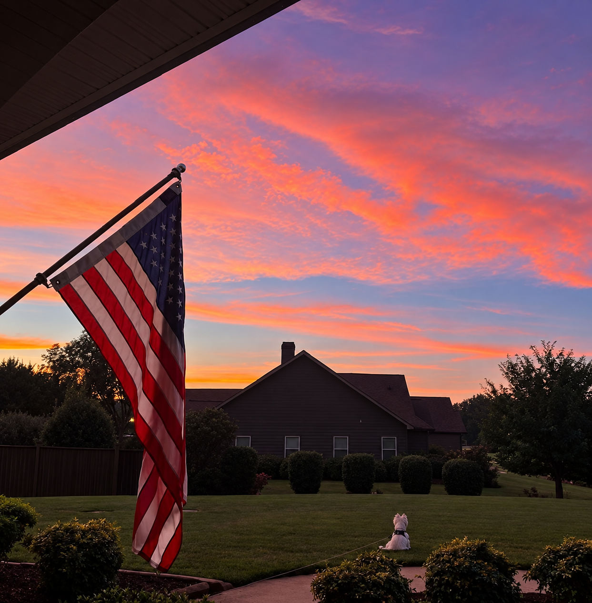
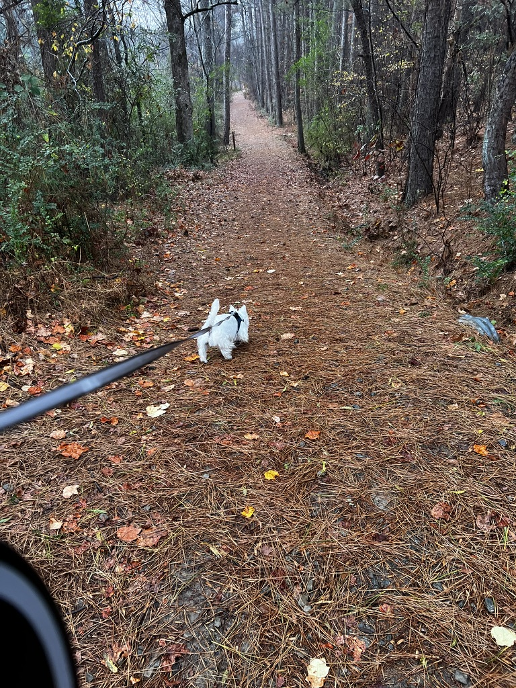

Phillip Sperry · A personal notebook
Exploring better ways to work, build, and figure things out—with accounting, technology, AI, and a willingness to try again.
Featured projects
The notebook
The person behind the projects
I’m Phillip. I work with accounting, explore technology, and use AI to help figure things out. This is where I’m keeping track of the projects, experiments, and lessons along the way—including the false starts.
A little more about meProjects
The bigger questions, ongoing builds, and experiments that keep changing as I learn. These pages are starting points for documenting the work.
Notebook
Observations from working with AI, exploring technology, and trying a different way of solving a problem.
About
Accounting, AI, technology—and the questions that connect them.
I’m interested in practical problem-solving: improving a workflow, understanding how something works, or seeing whether a new tool can help with an old problem.
AI has become part of that process. I’m exploring what it can actually be useful for, where it gets things wrong, and how to keep a human hand on the decisions that matter.
This is my personal website. Projects are the larger efforts I’m working through; the Notebook is for smaller experiments and observations. Both leave room for false starts, revisions, and lessons learned.
There’s room here for life outside the screen, too—including photography, the outdoors, and Fergus.
How this website began